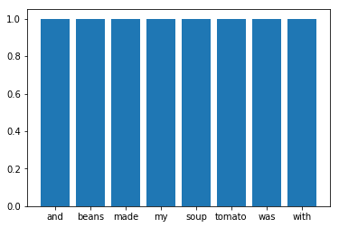
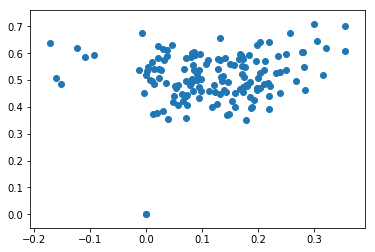
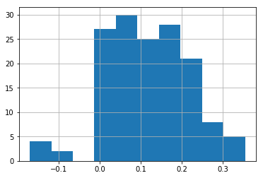
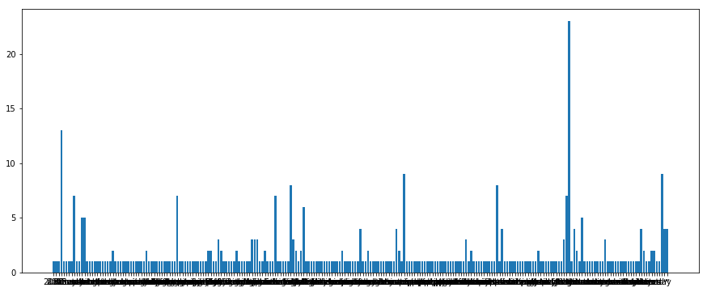
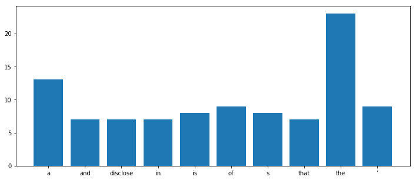

Are Punks Negative?¶
Today, our goal is to extend our webscraping capabilities and examine some record reviews from the website MaximumRocknRoll.
In [138]:
%%HTML
<iframe width="560" height="315" src="https://youtu.be/F-ai3HGCjGA" frameborder="0" allowfullscreen></iframe>

In [111]:
from textblob import TextBlob
In [112]:
text = "Hennessy is happy it's getting cold out."
In [113]:
blob = TextBlob(text)
In [114]:
blob.words
Out[114]:
WordList(['Hennessy', 'is', 'happy', 'it', "'s", 'getting', 'cold', 'out'])
In [115]:
blob.upper()
Out[115]:
TextBlob("HENNESSY IS HAPPY IT'S GETTING COLD OUT.")
In [116]:
blob.sentiment
Out[116]:
Sentiment(polarity=0.10000000000000003, subjectivity=1.0)
In [117]:
blob.pos_tags
Out[117]:
[('Hennessy', 'NNP'),
('is', 'VBZ'),
('happy', 'JJ'),
('it', 'PRP'),
("'s", 'VBZ'),
('getting', 'VBG'),
('cold', 'VBN'),
('out', 'RP')]
In [118]:
text2 = "my soup was made with tomato and beans"
In [119]:
blob2 = TextBlob(text2)
In [120]:
blob2.sentiment
Out[120]:
Sentiment(polarity=0.0, subjectivity=0.0)
In [121]:
blob2.word_counts
Out[121]:
defaultdict(int,
{'and': 1,
'beans': 1,
'made': 1,
'my': 1,
'soup': 1,
'tomato': 1,
'was': 1,
'with': 1})
In [122]:
counts = blob2.word_counts
In [74]:
counts.keys()
Out[74]:
dict_keys(['my', 'soup', 'was', 'made', 'with', 'tomato', 'and', 'beans'])
In [75]:
counts.values()
Out[75]:
dict_values([1, 1, 1, 1, 1, 1, 1, 1])
In [76]:
%matplotlib inline
import matplotlib.pyplot as plt
In [77]:
plt.bar(counts.keys(), counts.values())
Out[77]:
<Container object of 8 artists>

In [123]:
import pandas as pd
In [124]:
yelp = pd.read_csv('data/yelp.csv')
In [125]:
yelp.info()
<class 'pandas.core.frame.DataFrame'>
RangeIndex: 10000 entries, 0 to 9999
Data columns (total 10 columns):
business_id 10000 non-null object
date 10000 non-null object
review_id 10000 non-null object
stars 10000 non-null int64
text 10000 non-null object
type 10000 non-null object
user_id 10000 non-null object
cool 10000 non-null int64
useful 10000 non-null int64
funny 10000 non-null int64
dtypes: int64(4), object(6)
memory usage: 781.3+ KB
In [89]:
yelp.head()
Out[89]:
| business_id | date | review_id | stars | text | type | user_id | cool | useful | funny | |
|---|---|---|---|---|---|---|---|---|---|---|
| 0 | 9yKzy9PApeiPPOUJEtnvkg | 2011-01-26 | fWKvX83p0-ka4JS3dc6E5A | 5 | My wife took me here on my birthday for breakf... | review | rLtl8ZkDX5vH5nAx9C3q5Q | 2 | 5 | 0 |
| 1 | ZRJwVLyzEJq1VAihDhYiow | 2011-07-27 | IjZ33sJrzXqU-0X6U8NwyA | 5 | I have no idea why some people give bad review... | review | 0a2KyEL0d3Yb1V6aivbIuQ | 0 | 0 | 0 |
| 2 | 6oRAC4uyJCsJl1X0WZpVSA | 2012-06-14 | IESLBzqUCLdSzSqm0eCSxQ | 4 | love the gyro plate. Rice is so good and I als... | review | 0hT2KtfLiobPvh6cDC8JQg | 0 | 1 | 0 |
| 3 | _1QQZuf4zZOyFCvXc0o6Vg | 2010-05-27 | G-WvGaISbqqaMHlNnByodA | 5 | Rosie, Dakota, and I LOVE Chaparral Dog Park!!... | review | uZetl9T0NcROGOyFfughhg | 1 | 2 | 0 |
| 4 | 6ozycU1RpktNG2-1BroVtw | 2012-01-05 | 1uJFq2r5QfJG_6ExMRCaGw | 5 | General Manager Scott Petello is a good egg!!!... | review | vYmM4KTsC8ZfQBg-j5MWkw | 0 | 0 | 0 |
In [90]:
yelp['text'][0]
Out[90]:
'My wife took me here on my birthday for breakfast and it was excellent. The weather was perfect which made sitting outside overlooking their grounds an absolute pleasure. Our waitress was excellent and our food arrived quickly on the semi-busy Saturday morning. It looked like the place fills up pretty quickly so the earlier you get here the better.\n\nDo yourself a favor and get their Bloody Mary. It was phenomenal and simply the best I\'ve ever had. I\'m pretty sure they only use ingredients from their garden and blend them fresh when you order it. It was amazing.\n\nWhile EVERYTHING on the menu looks excellent, I had the white truffle scrambled eggs vegetable skillet and it was tasty and delicious. It came with 2 pieces of their griddled bread with was amazing and it absolutely made the meal complete. It was the best "toast" I\'ve ever had.\n\nAnyway, I can\'t wait to go back!'
In [91]:
text = yelp['text'][0]
In [92]:
blob = TextBlob(text)
In [95]:
blob.word_counts.values()
Out[95]:
dict_values([2, 1, 1, 1, 2, 3, 1, 1, 1, 8, 9, 8, 3, 10, 1, 1, 1, 2, 1, 1, 1, 4, 1, 1, 1, 1, 2, 1, 1, 1, 2, 1, 1, 1, 1, 1, 1, 1, 1, 2, 1, 1, 2, 2, 1, 1, 1, 1, 1, 1, 1, 1, 1, 2, 5, 2, 2, 3, 1, 1, 1, 1, 1, 1, 1, 1, 1, 1, 1, 1, 1, 2, 1, 1, 1, 1, 1, 1, 1, 1, 1, 1, 1, 1, 1, 2, 1, 1, 1, 1, 1, 1, 1, 1, 1, 1, 1, 1, 1, 1, 1, 1])
In [96]:
blob.word_counts.keys()
Out[96]:
dict_keys(['my', 'wife', 'took', 'me', 'here', 'on', 'birthday', 'for', 'breakfast', 'and', 'it', 'was', 'excellent', 'the', 'weather', 'perfect', 'which', 'made', 'sitting', 'outside', 'overlooking', 'their', 'grounds', 'an', 'absolute', 'pleasure', 'our', 'waitress', 'food', 'arrived', 'quickly', 'semi-busy', 'saturday', 'morning', 'looked', 'like', 'place', 'fills', 'up', 'pretty', 'so', 'earlier', 'you', 'get', 'better', 'do', 'yourself', 'a', 'favor', 'bloody', 'mary', 'phenomenal', 'simply', 'best', 'i', 've', 'ever', 'had', 'm', 'sure', 'they', 'only', 'use', 'ingredients', 'from', 'garden', 'blend', 'them', 'fresh', 'when', 'order', 'amazing', 'while', 'everything', 'menu', 'looks', 'white', 'truffle', 'scrambled', 'eggs', 'vegetable', 'skillet', 'tasty', 'delicious', 'came', 'with', '2', 'pieces', 'of', 'griddled', 'bread', 'absolutely', 'meal', 'complete', 'toast', 'anyway', 'ca', "n't", 'wait', 'to', 'go', 'back'])
In [97]:
blob.sentences
Out[97]:
[Sentence("My wife took me here on my birthday for breakfast and it was excellent."),
Sentence("The weather was perfect which made sitting outside overlooking their grounds an absolute pleasure."),
Sentence("Our waitress was excellent and our food arrived quickly on the semi-busy Saturday morning."),
Sentence("It looked like the place fills up pretty quickly so the earlier you get here the better."),
Sentence("Do yourself a favor and get their Bloody Mary."),
Sentence("It was phenomenal and simply the best I've ever had."),
Sentence("I'm pretty sure they only use ingredients from their garden and blend them fresh when you order it."),
Sentence("It was amazing."),
Sentence("While EVERYTHING on the menu looks excellent, I had the white truffle scrambled eggs vegetable skillet and it was tasty and delicious."),
Sentence("It came with 2 pieces of their griddled bread with was amazing and it absolutely made the meal complete."),
Sentence("It was the best "toast" I've ever had."),
Sentence("Anyway, I can't wait to go back!")]
In [98]:
blob.sentiment
Out[98]:
Sentiment(polarity=0.40246913580246907, subjectivity=0.6591122868900646)
In [105]:
words = list(blob.word_counts.keys())
In [106]:
pos = ['best', 'great', 'loved', 'excellent', 'pleasure', 'phenomenal']
neg = ['worst', 'bad', 'hated', 'terrible', 'miserable', 'awful', 'gross']
In [108]:
p = 0
for word in words:
if word in pos:
p += 1
elif word in neg:
p -= 1
else:
pass
In [110]:
p
Out[110]:
4
Record Reviews¶
Now, we want to download some record reviews, and assess the language used.
In [5]:
import requests
from bs4 import BeautifulSoup
import spacy
In [6]:
url = 'http://maximumrocknroll.com/cat/reviews/'
In [7]:
response = requests.get(url)
soup = BeautifulSoup(response.text, 'html.parser')
In [8]:
soup.find('ul', {'class': 'grid'}).a.attrs['href']
Out[8]:
'http://maximumrocknroll.com/reissue-of-the-week-hex-poison-in-the-system-the-demos-lp/'
In [9]:
links = soup.find('ul', {'class': 'grid'}).find_all('a')
In [10]:
links[0].attrs['href']
Out[10]:
'http://maximumrocknroll.com/reissue-of-the-week-hex-poison-in-the-system-the-demos-lp/'
In [11]:
for i in links:
print(i.attrs['href'])
http://maximumrocknroll.com/reissue-of-the-week-hex-poison-in-the-system-the-demos-lp/
http://maximumrocknroll.com/record-of-the-week-g-l-o-s-s-girls-living-outside-societys-shit-ep/
http://maximumrocknroll.com/reissue-of-the-week-the-hunches/
http://maximumrocknroll.com/record-of-the-week-la-misma/
http://maximumrocknroll.com/reissue-of-the-week-ebenezer-and-the-bludgeons-peer-pressure-lp/
http://maximumrocknroll.com/reissue-of-the-week-eutanasia-sentimiento-de-agitacion-lp/
http://maximumrocknroll.com/reissue-of-the-week-bikini-kill-revolution-girl-style-now-lp/
http://maximumrocknroll.com/record-of-the-week-aye-nako-the-blackest-eye-ep/
http://maximumrocknroll.com/reissue-of-the-week-mercenarias-demo-1983-lp/
http://maximumrocknroll.com/record-of-the-week-dan-melchiors-broke-review-lords-of-the-manor-ep/
http://maximumrocknroll.com/reissue-of-the-week-disclose/
http://maximumrocknroll.com/read-a-book-a-wailing-of-a-town/
http://maximumrocknroll.com/reissue-of-the-week-conflict/
http://maximumrocknroll.com/record-of-the-week-negative-scanner/
http://maximumrocknroll.com/reissue-of-the-week-reatards/
http://maximumrocknroll.com/reissue-of-the-week-happy/
http://maximumrocknroll.com/record-of-the-week-nervosas/
http://maximumrocknroll.com/record-of-the-week-basement-benders/
http://maximumrocknroll.com/record-of-the-week-c-c-t-v/
http://maximumrocknroll.com/reissue-of-the-week/
http://maximumrocknroll.com/record-of-the-week-andy-human-and-the-reptoids/
http://maximumrocknroll.com/record-of-the-week-no-form/
http://maximumrocknroll.com/reissue-of-the-week-blitzkrieg/
http://maximumrocknroll.com/record-of-the-week-power-masters/
http://maximumrocknroll.com/reissue-of-the-week-broken-talent/
http://maximumrocknroll.com/records-of-the-week-violence-creeps/
http://maximumrocknroll.com/record-of-the-week-no/
http://maximumrocknroll.com/reissue-of-the-week-dva-minuta-mrzne/
http://maximumrocknroll.com/25210/
http://maximumrocknroll.com/reissue-of-the-week-tragiedia/
http://maximumrocknroll.com/record-of-the-week-gas-chamber/
http://maximumrocknroll.com/record-of-the-week-black-time/
http://maximumrocknroll.com/reissue-of-the-week-moskwa/
http://maximumrocknroll.com/record-of-the-week-flesh-world/
http://maximumrocknroll.com/record-of-the-week-slugga/
http://maximumrocknroll.com/reissue-of-the-week-flag-of-democracy/
http://maximumrocknroll.com/reissue-of-the-week-blast/
http://maximumrocknroll.com/record-of-the-day-aquarian-blood/
http://maximumrocknroll.com/read-a-book-brooks-headley-on-soy-not-oi/
http://maximumrocknroll.com/record-of-the-week-abuse-of-substance-substance-abuse-ep/
http://maximumrocknroll.com/record-of-the-week-vlasta-popic-kvadrat-cd/
http://maximumrocknroll.com/record-of-the-week-last-sons-of-krypton-teenage-trash-lp-2/
http://maximumrocknroll.com/record-of-the-week-gay-kiss-preservation-measures-lp/
http://maximumrocknroll.com/record-of-the-week-nature-boys-pissy-windcoast-to-coast-7/
http://maximumrocknroll.com/reissue-of-the-week-soberania-personal-benditos-sean-munecos-que-pegan-lp/
http://maximumrocknroll.com/records-of-the-week-vatican-dagger-7-rixe-7/
http://maximumrocknroll.com/record-of-the-week-kronofogden-arbete-ocheller-fritid-lp/
http://maximumrocknroll.com/record-of-the-week-solutions-life-of-joy-12/
http://maximumrocknroll.com/record-of-the-week-barcelona-extremo-nihilismo-12/
http://maximumrocknroll.com/record-of-the-week-davidians-night-terrorsgimme-all-yo-dope-45/
http://maximumrocknroll.com/reissue-of-the-week-pink-section-lp/
http://maximumrocknroll.com/record-of-the-week-morkhimmel-lp/
http://maximumrocknroll.com/record-of-the-week-mystery-date-new-noir-lp/
http://maximumrocknroll.com/record-of-the-week-sierpien-zawsze-nasze-lp/
http://maximumrocknroll.com/record-of-the-week-demolition-bombenhagel-cd/
http://maximumrocknroll.com/record-of-the-week-neighborhood-brats-recovery-lp/
http://maximumrocknroll.com/record-of-the-week-dribble-lovers-7/
http://maximumrocknroll.com/record-of-the-week-crime-desire-your-power-lp/
http://maximumrocknroll.com/record-of-the-week-young-conservatives-12/
http://maximumrocknroll.com/record-of-the-week-boston-strangler-fire-lp/
http://maximumrocknroll.com/reissue-of-the-week-alians-gavroche-lp/
http://maximumrocknroll.com/record-of-the-week-destruye-y-huye-oscura-sociedad-ep/
http://maximumrocknroll.com/record-of-the-week-no-sir-i-wont-shit-12/
http://maximumrocknroll.com/record-of-the-week-cadaver-em-transe-lp/
http://maximumrocknroll.com/read-a-book-valerie-solanas-the-defiant-life-of-the-woman-who-wrote-scum-and-shot-andy-warhol/
http://maximumrocknroll.com/record-of-the-week-copycats-an-idea-died-lp/
http://maximumrocknroll.com/reissue-of-the-week-deathwish-tailgate-12/
http://maximumrocknroll.com/record-of-the-week-hounds-of-hate-hate-springs-eternal-lp/
http://maximumrocknroll.com/record-of-the-week-no-faith-dead-weight-ep/
http://maximumrocknroll.com/reissue-of-the-week-x-aspirations-lp/
http://maximumrocknroll.com/record-of-the-week-la-flingueornitorrincos-punk-to-cross-borders-split-ep/
http://maximumrocknroll.com/reissue-of-the-week-sin-34-do-you-feel-safe-lp/
http://maximumrocknroll.com/record-of-the-week-plastic-crimewavespeed-guru-split-ep-book/
http://maximumrocknroll.com/record-of-the-week-generacion-suicida-todo-termina-lp/
http://maximumrocknroll.com/record-of-the-week-moira-scar-and-low-threat-profile/
http://maximumrocknroll.com/record-of-the-week-p-i-g-z-bloody-belgium-ep/
http://maximumrocknroll.com/record-of-the-week-grand-collapse-far-from-the-callous-crowd-lp/
http://maximumrocknroll.com/record-of-the-week-frau-punk-is-my-boyfriend-ep/
http://maximumrocknroll.com/record-of-the-week-ovens-feel-like-shit-ep/
http://maximumrocknroll.com/record-of-the-week-protestant-in-thy-name-lp/
http://maximumrocknroll.com/record-of-the-week-tercer-mundo-lp/
http://maximumrocknroll.com/record-of-the-week-qloaqa-letal-nunca-siempre-lp/
http://maximumrocknroll.com/too-smart-for-their-own-sake-torontos-actual-water/
http://maximumrocknroll.com/record-of-the-week-contortureahna-split-ep/
http://maximumrocknroll.com/record-of-the-week-s-h-i-t-generation-shit-ep/
http://maximumrocknroll.com/record-of-the-week-taulard-les-abords-du-lycee-lp/
http://maximumrocknroll.com/record-of-the-week-femacoffin-dismal-twilight-ep/
http://maximumrocknroll.com/record-of-the-week-dhk-extincion-ep-plus-interview-en-espanol/
http://maximumrocknroll.com/record-of-the-week-berlin-tristesse/
http://maximumrocknroll.com/record-of-the-week-obediencia-el-angel-exterminador-ep/
http://maximumrocknroll.com/record-of-the-week-accidente-amistad-y-rebelion-12/
http://maximumrocknroll.com/record-of-the-week-eastlink-lp/
http://maximumrocknroll.com/record-of-the-week-suicidas-ep/
http://maximumrocknroll.com/secret-prositutes-lp/
http://maximumrocknroll.com/record-of-the-week-ross-johnson-and-jeffrey-evans-vanity-session-lp/
http://maximumrocknroll.com/record-of-the-week-jailbird-y-ums-ep/
http://maximumrocknroll.com/record-of-the-week-rakta-12/
http://maximumrocknroll.com/record-of-the-week-negative-standardswhitehorse-split-lp/
http://maximumrocknroll.com/record-of-the-week-completed-exposition-lp/
http://maximumrocknroll.com/record-of-the-week-hoax-lp/
http://maximumrocknroll.com/tam89-4/
http://maximumrocknroll.com/records-of-the-week-tam89-3/
http://maximumrocknroll.com/record-of-the-week-tam89-2/
http://maximumrocknroll.com/record-of-the-week-tam89-1/
http://maximumrocknroll.com/record-of-the-week-concrete-cross-lp/
http://maximumrocknroll.com/record-of-the-week-the-trashies-teenage-rattlesnakes-lp/
http://maximumrocknroll.com/record-of-the-week-diataraxi-koinis-isixias-comp-lp/
http://maximumrocknroll.com/record-of-the-week-irreparables-12/
http://maximumrocknroll.com/record-of-the-week-amdi-petersens-arme-lp/
http://maximumrocknroll.com/from-the-vaults-fertil-miseria-cadenas-ep/
http://maximumrocknroll.com/record-of-the-week-abergaz-%c2%ad-minimalizam-megalomanije/
http://maximumrocknroll.com/peruvian-punk-documentaries-el-grito-subterraneo-y-lima-explota/
http://maximumrocknroll.com/snob-value-whiteout-lp/
http://maximumrocknroll.com/record-of-the-future-antimob-lp/
http://maximumrocknroll.com/from-the-vaults-drowning-roses/
http://maximumrocknroll.com/record-of-the-week-apogee-sound-club/
http://maximumrocknroll.com/zine-of-the-week-no-exit-vol-5/
http://maximumrocknroll.com/record-of-the-week-brain-killers-3rd-ep/
http://maximumrocknroll.com/zine-of-the-week-excitement-level-zero-3/
http://maximumrocknroll.com/record-of-the-week-cross-stitched-eyes-decomposition-lp/
http://maximumrocknroll.com/zine-of-the-month-rad-party-42/
http://maximumrocknroll.com/records-of-the-week-big-eyes-hot-nasties/
http://maximumrocknroll.com/from-the-vaults-down-syndrome-ep/
http://maximumrocknroll.com/record-of-the-week-nu-kle-er-blast-suntan/
http://maximumrocknroll.com/from-the-vaults-gulag-lp/
http://maximumrocknroll.com/record-of-the-week-omegas-ny-terminator-ep/
http://maximumrocknroll.com/record-of-the-week-rvivr/
http://maximumrocknroll.com/cassette-of-the-week-sac-anthology-1999-2004/
http://maximumrocknroll.com/from-the-vaults-bread-and-water/
http://maximumrocknroll.com/record-of-the-week-armagedomterokal-split-ep/
http://maximumrocknroll.com/from-the-vaults-keine-experimente-vol-ii-comp-lp/
http://maximumrocknroll.com/record-of-the-week-las-4-bandas-comp-lp/
http://maximumrocknroll.com/record-of-the-week-laalts-onanie-ship-cabaret-cd/
http://maximumrocknroll.com/come-to-our-show-a-punk-flyer-ebook/
http://maximumrocknroll.com/record-of-the-week-gash-cleansing-wave/
http://maximumrocknroll.com/white-riot-another-failure/
http://maximumrocknroll.com/record-of-the-week-welcome-to-the-arse-end-of-the-world-compilation-lp/
http://maximumrocknroll.com/record-of-the-week-john-henry-west-door-bolted-shut-lpcd/
http://maximumrocknroll.com/record-of-the-week-sharkpact-ditches-lp/
http://maximumrocknroll.com/read-a-book-the-encyclopedia-of-doris/
http://maximumrocknroll.com/record-of-the-week-rattus-holokaust-split-ep/
http://maximumrocknroll.com/record-of-the-week-royal-headache-lp/
http://maximumrocknroll.com/record-of-the-week-star-fucking-hipsters-lp/
http://maximumrocknroll.com/record-of-the-week-deathcage-dephosphorus/
http://maximumrocknroll.com/record-of-the-week-big-eyes-hard-life-lp/
http://maximumrocknroll.com/record-of-the-week-morbo-lp/
http://maximumrocknroll.com/record-of-the-week-contra-todos-mis-miedos-colera-ep/
http://maximumrocknroll.com/record-of-the-week-isterismo-lp/
http://maximumrocknroll.com/record-of-the-week-razorxfade-lp/
http://maximumrocknroll.com/record-of-the-week-a-tale-of-rotten-orange/
In [12]:
url = 'http://maximumrocknroll.com/reissue-of-the-week-hex-poison-in-the-system-the-demos-lp/'
In [13]:
response = requests.get(url)
In [14]:
soup = BeautifulSoup(response.text, 'html.parser')
In [15]:
soup.article
Out[15]:
<article class="wrapper">
<div class="column-central">
<h2>Reissue of the Week: HEX <em>Poison In The System: The Demos</em> LP</h2>
<ul class="meta-list">
<li>
<span class="meta-key">Published </span> <span class="meta-value">November 13, 2015</span> <span class="meta-key">By</span> <span class="meta-value">MRR</span>
</li>
<li>
<span class="meta-key">Categories</span>
<span class="meta-value">
<a href="http://maximumrocknroll.com/cat/reviews/">Reviews</a> </span>
</li>
</ul>
<img alt="" class="alignleft" height="318" src="http://images.bigcartel.com/bigcartel/product_images/163074247/max_h-1000+max_w-1000/btrcrs085_snip.JPG" width="306"/><strong>HEX – “Poison In The System: The Demos” CD</strong><br/>
If you liked your punk, the UK in the early to mid ’80s was a good place to be. Not only were all kinds of genres flourishing within said rubric, but there was a significant community of like-minded souls, putting on gigs, writing (and distributing) fanzines, (cassette) tape labels, and whatnot. It meant that bands could (and did!) release demos, on cassette, and distribute them far and wide. The anarcho-punk “scene,” spawned by the likes of CRASS and their progeny (SUBHUMANS, CONFLICT, FLUX OF PINK INDIANS, MOB, et al.) were the inspiration and incubator for HEX. Hailing from the Northeast of England, they were part and parcel of the legendary (well, to us folks, anyways) Sunderland Bunker, a venue, and musicians collective. Herein you’ll find four demos tapes (fourteen tracks in all), recorded in 1986 and 1987. A variety of musical styles, evocative of KILLING JOKE, ANTISECT, and the FAMOUS IMPOSTERS grace the demos. It all features the music gifts of Dickie Hammond and Dave Lainey, better known for playing in HDQ and later LEATHERFACE. Really great stuff all round, and some excellent liner notes do a superb job of capturing the sense of community, and possibility that was nurtured by the scene. (Ramsey Kanaan)<br/>
(<a href="http://www.bosstuneage.com/" target="_blank">Boss Tuneage</a>)</div></article>
In [16]:
soup.h2
Out[16]:
<h2>Reissue of the Week: HEX <em>Poison In The System: The Demos</em> LP</h2>
In [17]:
soup.article.text
Out[17]:
'\n\nReissue of the Week: HEX Poison In The System: The Demos LP\n\n\nPublished November 13, 2015 By MRR\n\n\nCategories\n\nReviews \n\n\nHEX – “Poison In The System: The Demos” CD\nIf you liked your punk, the UK in the early to mid ’80s was a good place to be. Not only were all kinds of genres flourishing within said rubric, but there was a significant community of like-minded souls, putting on gigs, writing (and distributing) fanzines, (cassette) tape labels, and whatnot. It meant that bands could (and did!) release demos, on cassette, and distribute them far and wide. The anarcho-punk “scene,” spawned by the likes of CRASS and their progeny (SUBHUMANS, CONFLICT, FLUX OF PINK INDIANS, MOB, et al.) were the inspiration and incubator for HEX. Hailing from the Northeast of England, they were part and parcel of the legendary (well, to us folks, anyways) Sunderland Bunker, a venue, and musicians collective. Herein you’ll find four demos tapes (fourteen tracks in all), recorded in 1986 and 1987. A variety of musical styles, evocative of KILLING JOKE, ANTISECT, and the FAMOUS IMPOSTERS grace the demos. It all features the music gifts of Dickie Hammond and Dave Lainey, better known for playing in HDQ and later LEATHERFACE. Really great stuff all round, and some excellent liner notes do a superb job of capturing the sense of community, and possibility that was nurtured by the scene. (Ramsey Kanaan)\n(Boss Tuneage)'
In [18]:
url = 'http://maximumrocknroll.com/cat/reviews/'
response = requests.get(url)
soup = BeautifulSoup(response.text, 'html.parser')
links = soup.find('ul', {'class': 'grid'}).find_all('a')
review = []
title = []
for i in links:
req = requests.get(i.attrs['href'])
s = BeautifulSoup(req.text, 'html.parser')
review.append(s.article.text)
title.append(s.h2.text)
In [19]:
import pandas as pd
reviews = pd.DataFrame({'album': title, 'review': review})
In [20]:
reviews.head()
Out[20]:
| album | review | |
|---|---|---|
| 0 | Reissue of the Week: HEX Poison In The System:... | \n\nReissue of the Week: HEX Poison In The Sys... |
| 1 | Record of the Week: G.L.O.S.S. Girls Living Ou... | \n\nRecord of the Week: G.L.O.S.S. Girls Livin... |
| 2 | Reissue of the Week: The Hunches | \n\nReissue of the Week: The Hunches\n\n\nPubl... |
| 3 | Record of the Week: La Misma | \n\nRecord of the Week: La Misma\n\n\nPublishe... |
| 4 | Reissue of the Week: EBENEZER AND THE BLUDGEON... | \n\nReissue of the Week: EBENEZER AND THE BLUD... |
In [21]:
reviews.shape
Out[21]:
(150, 2)
In [22]:
reviews.review[0]
Out[22]:
'\n\nReissue of the Week: HEX Poison In The System: The Demos LP\n\n\nPublished November 13, 2015 By MRR\n\n\nCategories\n\nReviews \n\n\nHEX – “Poison In The System: The Demos” CD\nIf you liked your punk, the UK in the early to mid ’80s was a good place to be. Not only were all kinds of genres flourishing within said rubric, but there was a significant community of like-minded souls, putting on gigs, writing (and distributing) fanzines, (cassette) tape labels, and whatnot. It meant that bands could (and did!) release demos, on cassette, and distribute them far and wide. The anarcho-punk “scene,” spawned by the likes of CRASS and their progeny (SUBHUMANS, CONFLICT, FLUX OF PINK INDIANS, MOB, et al.) were the inspiration and incubator for HEX. Hailing from the Northeast of England, they were part and parcel of the legendary (well, to us folks, anyways) Sunderland Bunker, a venue, and musicians collective. Herein you’ll find four demos tapes (fourteen tracks in all), recorded in 1986 and 1987. A variety of musical styles, evocative of KILLING JOKE, ANTISECT, and the FAMOUS IMPOSTERS grace the demos. It all features the music gifts of Dickie Hammond and Dave Lainey, better known for playing in HDQ and later LEATHERFACE. Really great stuff all round, and some excellent liner notes do a superb job of capturing the sense of community, and possibility that was nurtured by the scene. (Ramsey Kanaan)\n(Boss Tuneage)'
In [23]:
from textblob import TextBlob
In [24]:
reviews.to_csv('mrr_reviews.csv')
In [ ]:
import pandas as pd
reviews = pd.read_csv('mrr_reviews.csv')
In [25]:
text = TextBlob(reviews.review[0])
In [26]:
text.sentences
Out[26]:
[Sentence("
Reissue of the Week: HEX Poison In The System: The Demos LP
Published November 13, 2015 By MRR
Categories
Reviews
HEX – “Poison In The System: The Demos” CD
If you liked your punk, the UK in the early to mid ’80s was a good place to be."),
Sentence("Not only were all kinds of genres flourishing within said rubric, but there was a significant community of like-minded souls, putting on gigs, writing (and distributing) fanzines, (cassette) tape labels, and whatnot."),
Sentence("It meant that bands could (and did!)"),
Sentence("release demos, on cassette, and distribute them far and wide."),
Sentence("The anarcho-punk “scene,” spawned by the likes of CRASS and their progeny (SUBHUMANS, CONFLICT, FLUX OF PINK INDIANS, MOB, et al.)"),
Sentence("were the inspiration and incubator for HEX."),
Sentence("Hailing from the Northeast of England, they were part and parcel of the legendary (well, to us folks, anyways) Sunderland Bunker, a venue, and musicians collective."),
Sentence("Herein you’ll find four demos tapes (fourteen tracks in all), recorded in 1986 and 1987."),
Sentence("A variety of musical styles, evocative of KILLING JOKE, ANTISECT, and the FAMOUS IMPOSTERS grace the demos."),
Sentence("It all features the music gifts of Dickie Hammond and Dave Lainey, better known for playing in HDQ and later LEATHERFACE."),
Sentence("Really great stuff all round, and some excellent liner notes do a superb job of capturing the sense of community, and possibility that was nurtured by the scene."),
Sentence("(Ramsey Kanaan)
(Boss Tuneage)")]
In [27]:
text.sentiment
Out[27]:
Sentiment(polarity=0.3538194444444444, subjectivity=0.6069444444444445)
In [28]:
text.subjectivity
Out[28]:
0.6069444444444445
In [29]:
text.polarity
Out[29]:
0.3538194444444444
In [31]:
pol = []
subj = []
for i in reviews.review:
text = TextBlob(i)
pol.append(text.sentiment.polarity)
subj.append(text.sentiment.subjectivity)
In [32]:
reviews['polarity'] = pol
reviews['subjectivity'] = subj
In [126]:
reviews.head()
Out[126]:
| album | review | polarity | subjectivity | |
|---|---|---|---|---|
| 0 | Reissue of the Week: HEX Poison In The System:... | \n\nReissue of the Week: HEX Poison In The Sys... | 0.353819 | 0.606944 |
| 1 | Record of the Week: G.L.O.S.S. Girls Living Ou... | \n\nRecord of the Week: G.L.O.S.S. Girls Livin... | 0.087500 | 0.594318 |
| 2 | Reissue of the Week: The Hunches | \n\nReissue of the Week: The Hunches\n\n\nPubl... | 0.079167 | 0.490625 |
| 3 | Record of the Week: La Misma | \n\nRecord of the Week: La Misma\n\n\nPublishe... | 0.077406 | 0.480249 |
| 4 | Reissue of the Week: EBENEZER AND THE BLUDGEON... | \n\nReissue of the Week: EBENEZER AND THE BLUD... | 0.164881 | 0.576786 |
In [128]:
reviews.nlargest(5, 'polarity')['album']
Out[128]:
76 Record of the Week: GRAND COLLAPSE Far From th...
0 Reissue of the Week: HEX Poison In The System:...
92 Record of the Week: SUICIDAS No Nos Mata la Mu...
26 Record of the Week: NO
63 Record of the Week: CADAVER EM TRANSE LP
Name: album, dtype: object
In [129]:
import matplotlib.pyplot as plt
%matplotlib inline
plt.scatter(reviews.polarity, reviews.subjectivity)
Out[129]:
<matplotlib.collections.PathCollection at 0x11742c0f0>

In [130]:
reviews['polarity'].hist()
Out[130]:
<matplotlib.axes._subplots.AxesSubplot at 0x117448128>

In [131]:
reviews[reviews['polarity'] < 0]
Out[131]:
| album | review | polarity | subjectivity | |
|---|---|---|---|---|
| 5 | Reissue of the Week: EUTANASIA Sentimiento de ... | \n\nReissue of the Week: EUTANASIA Sentimiento... | -0.151726 | 0.486785 |
| 18 | Record of the Week: C.C.T.V | \n\nRecord of the Week: C.C.T.V\n\n\nPublished... | -0.013326 | 0.536119 |
| 23 | Record of the Week: Power Masters | \n\nRecord of the Week: Power Masters\n\n\nPub... | -0.003134 | 0.450889 |
| 34 | Record of the Week: Slugga | \n\nRecord of the Week: Slugga\n\n\nPublished ... | -0.124157 | 0.619246 |
| 36 | Reissue of the Week: Blast | \n\nReissue of the Week: Blast\n\n\nPublished ... | -0.161497 | 0.509273 |
| 37 | Record of the Week: Aquarian Blood | \n\nRecord of the Week: Aquarian Blood\n\n\nPu... | -0.109696 | 0.585671 |
| 45 | Records of the Week: VATICAN DAGGER 7″ & RIXE 7″ | \n\nRecords of the Week: VATICAN DAGGER 7″ & R... | -0.093889 | 0.595000 |
| 51 | Record of the Week: MÖRKHIMMEL Ostří Černé Kos... | \n\nRecord of the Week: MÖRKHIMMEL Ostří Černé... | -0.007875 | 0.677289 |
| 74 | Records of the Week: MOIRA SCAR and LOW THREAT... | \n\nRecords of the Week: MOIRA SCAR and LOW TH... | -0.000278 | 0.517091 |
| 123 | Record of the Week: NÜ-KLĒ-ER BLAST SUNTAN The... | \n\nRecord of the Week: NÜ-KLĒ-ER BLAST SUNTAN... | -0.171051 | 0.638190 |
In [134]:
reviews.iloc[34]['review']
Out[134]:
'\n\nRecord of the Week: Slugga\n\n\nPublished June 17, 2015 By Greg\n\n\nCategories\n\nReviews \n\n\nSLUGGA – “Parasite/Shaved Heads”\nThis record rules. Stupid, short and direct. “Parasite” is so fucking catchy and punk and perfect. I think my only complaint is their singer sounds a little like Lumpy (of the DUMPERS), but that’s not a big complaint. All that aside, the fucking song is an instant classic and I won’t be surprised when it’s featured on Killed By Death #125 in 2053. “Shaved Heads” slows down just barely and it’s the perfect song for an idiotic creepy crawl through a stupid fucking basement show. Sloppy, but not too sloppy, punk…the kind of shit you wanna hear first thing in the morning before you spend the day punching fuckheads in the face. (Greg Harvester)\n(Total Punk)\n\xa0\n\n\n'
In [135]:
reviews.polarity.mean()
Out[135]:
0.11952482409853642
In [136]:
reviews.subjectivity.mean()
Out[136]:
0.5093821719063856
In [37]:
text = TextBlob(reviews.review[10])
text.word_counts
Out[37]:
defaultdict(int,
{'2007': 1,
'2015': 1,
'30': 1,
'a': 13,
'about': 1,
'after': 1,
'ambivalent': 1,
'an': 1,
'and': 7,
'any': 1,
'anything': 1,
'are': 5,
'as': 5,
'assault': 1,
'attempt': 1,
'attentive': 1,
'beat': 1,
'because': 1,
'before': 1,
'being': 1,
'best': 1,
'brain': 1,
'but': 1,
'by': 2,
'called': 1,
'can': 1,
'care': 1,
'casts': 1,
'categories': 1,
'chaos': 1,
'closing': 1,
'commitment': 1,
'comparably': 1,
'compelling': 1,
'conclusion': 1,
'considering': 1,
'context': 2,
'continued': 1,
'course': 1,
'cynical': 1,
'd-beat': 1,
'damn': 1,
'death': 1,
'decade': 1,
'despite': 1,
'different': 1,
'disbones': 1,
'discharge-worship': 1,
'disclose': 7,
'disengagement': 1,
'doggedly': 1,
'enduring': 1,
'energy': 1,
'epilogue': 1,
'era': 1,
'es': 1,
'especially': 1,
'even': 1,
'evident': 1,
'experience': 1,
'fairytale': 2,
'far': 2,
'final': 1,
'foggy': 1,
'for': 3,
'forest': 2,
'forever': 1,
'forsaking': 1,
'found': 1,
'framtid': 1,
'friend': 1,
'from': 2,
'fucking': 1,
'fuzzed-out': 1,
'going': 1,
'grounded': 1,
'guitar': 1,
'here': 3,
'him': 3,
'his': 3,
'human': 1,
'hypnotic': 1,
'i': 2,
'ignore': 1,
'ill-fated': 1,
'immediately': 1,
'in': 7,
'increasingly': 1,
'inertial': 1,
'influence': 1,
'insightful': 1,
'irreducible': 1,
'is': 8,
'it': 3,
'its': 2,
'itself': 1,
'just': 2,
'kawakami': 6,
'knew': 1,
'la': 1,
'later': 1,
'legacy': 1,
'legend': 1,
'less': 1,
'like': 1,
'liner': 1,
'listened': 1,
'listeners': 1,
'lives': 1,
'logical': 1,
'look': 1,
'loose': 1,
'lp': 2,
'majority': 1,
'metallic': 1,
'might': 1,
'mindful': 1,
'missing': 1,
'monumental': 1,
'more': 4,
'mother': 1,
'mrr': 1,
'much': 2,
'mus': 1,
'music': 1,
'muster': 1,
'mythos': 1,
'nearly': 1,
'neither': 1,
'new': 1,
'nightmare': 1,
'noise': 1,
'nor': 1,
'not': 4,
'notes': 2,
'nuanced': 1,
'of': 9,
'on': 1,
'opinion': 1,
'opus': 1,
'or': 1,
'other': 1,
'out': 1,
'over': 1,
'pall': 1,
'palliative': 1,
'particularly': 1,
'passing': 1,
'perceptions': 1,
'perpetual': 1,
'personal': 1,
'pinnacle': 1,
'place': 1,
'point': 1,
'potential': 1,
'primarily': 1,
'psychedelic': 1,
'published': 1,
'raw': 1,
'read': 1,
'record': 3,
'reflective': 1,
'reissue': 2,
'released': 1,
'relevant': 1,
'remains': 1,
'respect': 1,
'reviews': 1,
'riffs': 1,
'rip': 1,
'romantic': 1,
'royalties': 1,
's': 8,
'saw': 1,
'schrader': 4,
'seem': 1,
'september': 1,
'set': 1,
'shit': 1,
'showing': 1,
'shown': 1,
'simple': 1,
'simplify': 1,
'simply': 1,
'simultaneously': 1,
'single': 1,
'so': 1,
'solos': 1,
'some': 2,
'sonic': 1,
'still': 1,
'story': 1,
'stuart': 1,
'stupefying': 1,
'style': 1,
'swirling': 1,
't': 1,
'ten-minute': 1,
'than': 3,
'that': 7,
'the': 23,
'these': 1,
'this': 4,
'those': 2,
'time': 1,
'to': 5,
'tomorrow': 1,
'tone': 1,
'too': 1,
'touching': 1,
'tour': 1,
'track': 1,
'track-by-track': 1,
'transcendent': 1,
'trees': 3,
'true': 1,
'un': 1,
'unrelenting': 1,
'us': 1,
'vast': 1,
'verdict': 1,
'vida': 1,
'wardead': 1,
'was': 1,
'week': 1,
'welcome': 1,
'while': 1,
'who': 1,
'with': 4,
'without': 2,
'won': 1,
'writes': 1,
'yesterday': 2,
'you': 2,
'zoo': 1,
'–': 1,
'’': 9,
'“': 4,
'”': 4})
In [122]:
text.words
Out[122]:
WordList(['Reissue', 'of', 'the', 'Week', 'Disclose', 'Published', 'September', '30', '2015', 'By', 'MRR', 'Categories', 'Reviews', 'DISCLOSE', '–', '“', 'Yesterday', '’', 's', 'Fairytale', 'Tomorrow', '’', 's', 'Nightmare', '”', 'LP', 'This', 'is', 'a', 'monumental', 'record', 'even', 'without', 'considering', 'its', 'place', 'as', 'the', 'final', 'DISCLOSE', 'LP', 'released', 'before', 'Kawakami', '’', 's', 'passing', 'in', '2007', 'His', 'death', 'casts', 'an', 'enduring', 'pall', 'particularly', 'evident', 'here', 'in', 'the', 'new', 'liner', 'notes', 'from', 'Stuart', 'Schrader', 'While', 'Schrader', 'primarily', 'writes', 'about', 'the', 'ill-fated', 'DISCLOSE', 'FRAMTID', 'tour', 'it', 'is', 'a', 'far', 'more', 'insightful', 'nuanced', 'and', 'touching', 'read', 'than', 'that', 'might', 'seem', 'Neither', 'romantic', 'nor', 'cynical', 'the', 'tone', 'is', 'simply', 'reflective', 'and', 'personal', 'here', 'are', 'his', 'perceptions', 'of', 'Kawakami', '’', 's', 'experience', 'in', 'the', 'US', 'not', 'a', 'verdict', 'but', 'a', 'single', 'opinion', 'The', 'epilogue', 'of', 'the', 'story', 'over', 'a', 'decade', 'later', 'remains', 'ambivalent', 'Kawakami', 'despite', 'his', 'legacy', 'was', 'still', 'a', 'human', 'being', 'irreducible', 'to', 'the', 'mythos', 'that', 'lives', 'on', 'after', 'him', 'The', 'continued', 'care', 'and', 'commitment', 'shown', 'by', 'those', 'that', 'knew', 'him', 'and', 'called', 'him', '“', 'friend', '”', 'are', 'a', 'welcome', 'palliative', 'showing', 'a', 'more', 'grounded', 'context', 'to', 'the', 'DISCLOSE', 'legend', 'In', 'that', 'respect', 'the', 'royalties', 'from', 'this', 'reissue', 'are', 'going', 'to', 'Kawakami', '’', 's', 'mother', 'Of', 'course', 'for', 'the', 'vast', 'majority', 'of', 'listeners', 'as', 'Schrader', 'is', 'mindful', 'to', 'point', 'out', 'the', 'context', 'is', 'far', 'less', 'immediately', 'relevant', 'than', 'the', 'record', 'itself', 'For', 'those', 'who', 'ignore', 'or', 'simplify', 'DISCLOSE', 'as', 'just', 'some', 'DISCHARGE-worship', 'you', 'are', 'missing', 'the', 'forest', 'for', 'the', 'trees', 'because', 'these', 'trees', 'look', 'like', 'some', 'other', 'damn', 'trees', 'you', 'saw', 'in', 'a', 'different', 'fucking', 'forest', 'It', '’', 's', 'just', 'not', 'that', 'simple', 'and', 'especially', 'not', 'with', 'this', 'record', 'Schrader', '’', 's', 'track-by-track', 'notes', 'are', 'much', 'more', 'compelling', 'and', 'attentive', 'than', 'anything', 'I', 'can', 'comparably', 'muster', 'so', 'I', 'won', '’', 't', 'attempt', 'too', 'much', 'here', 'Yesterday', '’', 's', 'Fairytale', 'is', 'the', 'pinnacle', 'of', '“', 'Disbones', '”', 'era', 'DISCLOSE', 'fuzzed-out', 'D-beat', 'with', 'increasingly', 'more', 'metallic', 'influence', 'in', 'the', 'guitar', 'riffs', 'Without', 'forsaking', 'any', 'of', 'the', 'raw', 'energy', 'this', 'style', 'set', 'loose', 'the', 'true', 'hypnotic', 'potential', 'of', 'the', 'unrelenting', 'beat', 'that', 'found', 'its', 'logical', 'conclusion', 'in', 'the', 'closing', 'track', '“', 'Wardead', '”', 'a', 'nearly', 'ten-minute', 'opus', 'of', 'swirling', 'chaos', 'and', 'perpetual', 'solos', 'a', 'psychedelic', 'disengagement', 'with', 'time', 'a', 'sonic', 'inertial', 'assault', 'that', 'is', 'simultaneously', 'as', 'stupefying', 'as', 'it', 'is', 'doggedly', 'transcendent', 'Noise', 'not', 'music', 'Best', 'listened', 'to', 'with', 'a', 'foggy', 'brain', 'RIP', 'Kawakami', 'Kawakami', 'forever', 'Shit', 'Zoo', 'La', 'Vida', 'Es', 'Un', 'Mus'])
In [38]:
word_list = set(text.words)
In [39]:
len(text.words)
Out[39]:
399
In [40]:
len(word_list)
Out[40]:
250
In [41]:
len(text.word_counts.values())
Out[41]:
239
In [127]:
%matplotlib inline
import matplotlib.pyplot as plt
import pandas as pd
In [42]:
text.word_counts.items()
Out[42]:
dict_items([('reissue', 2), ('of', 9), ('the', 23), ('week', 1), ('disclose', 7), ('published', 1), ('september', 1), ('30', 1), ('2015', 1), ('by', 2), ('mrr', 1), ('categories', 1), ('reviews', 1), ('–', 1), ('“', 4), ('yesterday', 2), ('’', 9), ('s', 8), ('fairytale', 2), ('tomorrow', 1), ('nightmare', 1), ('”', 4), ('lp', 2), ('this', 4), ('is', 8), ('a', 13), ('monumental', 1), ('record', 3), ('even', 1), ('without', 2), ('considering', 1), ('its', 2), ('place', 1), ('as', 5), ('final', 1), ('released', 1), ('before', 1), ('kawakami', 6), ('passing', 1), ('in', 7), ('2007', 1), ('his', 3), ('death', 1), ('casts', 1), ('an', 1), ('enduring', 1), ('pall', 1), ('particularly', 1), ('evident', 1), ('here', 3), ('new', 1), ('liner', 1), ('notes', 2), ('from', 2), ('stuart', 1), ('schrader', 4), ('while', 1), ('primarily', 1), ('writes', 1), ('about', 1), ('ill-fated', 1), ('framtid', 1), ('tour', 1), ('it', 3), ('far', 2), ('more', 4), ('insightful', 1), ('nuanced', 1), ('and', 7), ('touching', 1), ('read', 1), ('than', 3), ('that', 7), ('might', 1), ('seem', 1), ('neither', 1), ('romantic', 1), ('nor', 1), ('cynical', 1), ('tone', 1), ('simply', 1), ('reflective', 1), ('personal', 1), ('are', 5), ('perceptions', 1), ('experience', 1), ('us', 1), ('not', 4), ('verdict', 1), ('but', 1), ('single', 1), ('opinion', 1), ('epilogue', 1), ('story', 1), ('over', 1), ('decade', 1), ('later', 1), ('remains', 1), ('ambivalent', 1), ('despite', 1), ('legacy', 1), ('was', 1), ('still', 1), ('human', 1), ('being', 1), ('irreducible', 1), ('to', 5), ('mythos', 1), ('lives', 1), ('on', 1), ('after', 1), ('him', 3), ('continued', 1), ('care', 1), ('commitment', 1), ('shown', 1), ('those', 2), ('knew', 1), ('called', 1), ('friend', 1), ('welcome', 1), ('palliative', 1), ('showing', 1), ('grounded', 1), ('context', 2), ('legend', 1), ('respect', 1), ('royalties', 1), ('going', 1), ('mother', 1), ('course', 1), ('for', 3), ('vast', 1), ('majority', 1), ('listeners', 1), ('mindful', 1), ('point', 1), ('out', 1), ('less', 1), ('immediately', 1), ('relevant', 1), ('itself', 1), ('who', 1), ('ignore', 1), ('or', 1), ('simplify', 1), ('just', 2), ('some', 2), ('discharge-worship', 1), ('you', 2), ('missing', 1), ('forest', 2), ('trees', 3), ('because', 1), ('these', 1), ('look', 1), ('like', 1), ('other', 1), ('damn', 1), ('saw', 1), ('different', 1), ('fucking', 1), ('simple', 1), ('especially', 1), ('with', 4), ('track-by-track', 1), ('much', 2), ('compelling', 1), ('attentive', 1), ('anything', 1), ('i', 2), ('can', 1), ('comparably', 1), ('muster', 1), ('so', 1), ('won', 1), ('t', 1), ('attempt', 1), ('too', 1), ('pinnacle', 1), ('disbones', 1), ('era', 1), ('fuzzed-out', 1), ('d-beat', 1), ('increasingly', 1), ('metallic', 1), ('influence', 1), ('guitar', 1), ('riffs', 1), ('forsaking', 1), ('any', 1), ('raw', 1), ('energy', 1), ('style', 1), ('set', 1), ('loose', 1), ('true', 1), ('hypnotic', 1), ('potential', 1), ('unrelenting', 1), ('beat', 1), ('found', 1), ('logical', 1), ('conclusion', 1), ('closing', 1), ('track', 1), ('wardead', 1), ('nearly', 1), ('ten-minute', 1), ('opus', 1), ('swirling', 1), ('chaos', 1), ('perpetual', 1), ('solos', 1), ('psychedelic', 1), ('disengagement', 1), ('time', 1), ('sonic', 1), ('inertial', 1), ('assault', 1), ('simultaneously', 1), ('stupefying', 1), ('doggedly', 1), ('transcendent', 1), ('noise', 1), ('music', 1), ('best', 1), ('listened', 1), ('foggy', 1), ('brain', 1), ('rip', 1), ('forever', 1), ('shit', 1), ('zoo', 1), ('la', 1), ('vida', 1), ('es', 1), ('un', 1), ('mus', 1)])
In [43]:
text.word_counts.keys()
Out[43]:
dict_keys(['reissue', 'of', 'the', 'week', 'disclose', 'published', 'september', '30', '2015', 'by', 'mrr', 'categories', 'reviews', '–', '“', 'yesterday', '’', 's', 'fairytale', 'tomorrow', 'nightmare', '”', 'lp', 'this', 'is', 'a', 'monumental', 'record', 'even', 'without', 'considering', 'its', 'place', 'as', 'final', 'released', 'before', 'kawakami', 'passing', 'in', '2007', 'his', 'death', 'casts', 'an', 'enduring', 'pall', 'particularly', 'evident', 'here', 'new', 'liner', 'notes', 'from', 'stuart', 'schrader', 'while', 'primarily', 'writes', 'about', 'ill-fated', 'framtid', 'tour', 'it', 'far', 'more', 'insightful', 'nuanced', 'and', 'touching', 'read', 'than', 'that', 'might', 'seem', 'neither', 'romantic', 'nor', 'cynical', 'tone', 'simply', 'reflective', 'personal', 'are', 'perceptions', 'experience', 'us', 'not', 'verdict', 'but', 'single', 'opinion', 'epilogue', 'story', 'over', 'decade', 'later', 'remains', 'ambivalent', 'despite', 'legacy', 'was', 'still', 'human', 'being', 'irreducible', 'to', 'mythos', 'lives', 'on', 'after', 'him', 'continued', 'care', 'commitment', 'shown', 'those', 'knew', 'called', 'friend', 'welcome', 'palliative', 'showing', 'grounded', 'context', 'legend', 'respect', 'royalties', 'going', 'mother', 'course', 'for', 'vast', 'majority', 'listeners', 'mindful', 'point', 'out', 'less', 'immediately', 'relevant', 'itself', 'who', 'ignore', 'or', 'simplify', 'just', 'some', 'discharge-worship', 'you', 'missing', 'forest', 'trees', 'because', 'these', 'look', 'like', 'other', 'damn', 'saw', 'different', 'fucking', 'simple', 'especially', 'with', 'track-by-track', 'much', 'compelling', 'attentive', 'anything', 'i', 'can', 'comparably', 'muster', 'so', 'won', 't', 'attempt', 'too', 'pinnacle', 'disbones', 'era', 'fuzzed-out', 'd-beat', 'increasingly', 'metallic', 'influence', 'guitar', 'riffs', 'forsaking', 'any', 'raw', 'energy', 'style', 'set', 'loose', 'true', 'hypnotic', 'potential', 'unrelenting', 'beat', 'found', 'logical', 'conclusion', 'closing', 'track', 'wardead', 'nearly', 'ten-minute', 'opus', 'swirling', 'chaos', 'perpetual', 'solos', 'psychedelic', 'disengagement', 'time', 'sonic', 'inertial', 'assault', 'simultaneously', 'stupefying', 'doggedly', 'transcendent', 'noise', 'music', 'best', 'listened', 'foggy', 'brain', 'rip', 'forever', 'shit', 'zoo', 'la', 'vida', 'es', 'un', 'mus'])
In [44]:
text.word_counts.values()
Out[44]:
dict_values([2, 9, 23, 1, 7, 1, 1, 1, 1, 2, 1, 1, 1, 1, 4, 2, 9, 8, 2, 1, 1, 4, 2, 4, 8, 13, 1, 3, 1, 2, 1, 2, 1, 5, 1, 1, 1, 6, 1, 7, 1, 3, 1, 1, 1, 1, 1, 1, 1, 3, 1, 1, 2, 2, 1, 4, 1, 1, 1, 1, 1, 1, 1, 3, 2, 4, 1, 1, 7, 1, 1, 3, 7, 1, 1, 1, 1, 1, 1, 1, 1, 1, 1, 5, 1, 1, 1, 4, 1, 1, 1, 1, 1, 1, 1, 1, 1, 1, 1, 1, 1, 1, 1, 1, 1, 1, 5, 1, 1, 1, 1, 3, 1, 1, 1, 1, 2, 1, 1, 1, 1, 1, 1, 1, 2, 1, 1, 1, 1, 1, 1, 3, 1, 1, 1, 1, 1, 1, 1, 1, 1, 1, 1, 1, 1, 1, 2, 2, 1, 2, 1, 2, 3, 1, 1, 1, 1, 1, 1, 1, 1, 1, 1, 1, 4, 1, 2, 1, 1, 1, 2, 1, 1, 1, 1, 1, 1, 1, 1, 1, 1, 1, 1, 1, 1, 1, 1, 1, 1, 1, 1, 1, 1, 1, 1, 1, 1, 1, 1, 1, 1, 1, 1, 1, 1, 1, 1, 1, 1, 1, 1, 1, 1, 1, 1, 1, 1, 1, 1, 1, 1, 1, 1, 1, 1, 1, 1, 1, 1, 1, 1, 1, 1, 1, 1, 1, 1, 1, 1])
In [45]:
plt.figure(figsize = (15, 6))
plt.bar(text.word_counts.keys(), text.word_counts.values())
Out[45]:
<Container object of 239 artists>

In [46]:
df = pd.DataFrame({'words': [word for word in text.word_counts.keys()], 'counts': [count for count in text.word_counts.values()]})
In [133]:
df.info()
<class 'pandas.core.frame.DataFrame'>
RangeIndex: 239 entries, 0 to 238
Data columns (total 2 columns):
counts 239 non-null int64
words 239 non-null object
dtypes: int64(1), object(1)
memory usage: 3.8+ KB
In [47]:
df.head()
Out[47]:
| counts | words | |
|---|---|---|
| 0 | 2 | reissue |
| 1 | 9 | of |
| 2 | 23 | the |
| 3 | 1 | week |
| 4 | 7 | disclose |
In [135]:
df.counts = df.counts.astype('int')
In [48]:
large = df.nlargest(10, 'counts')
In [49]:
plt.figure(figsize = (12, 5))
plt.bar(large['words'], large['counts'])
Out[49]:
<Container object of 10 artists>

In [138]:
from sklearn.feature_extraction.text import CountVectorizer
In [139]:
cvect = CountVectorizer()
In [140]:
cvect.fit_transform(reviews.review)
Out[140]:
<150x8611 sparse matrix of type '<class 'numpy.int64'>'
with 29595 stored elements in Compressed Sparse Row format>
In [143]:
cvect.get_feature_names()[:10]
Out[143]:
['00', '000', '00s', '01', '02', '03', '04', '05', '06', '064']
In [168]:
cvect = CountVectorizer(stop_words='english', max_features=300)
In [169]:
cvect.fit_transform(reviews.review)
Out[169]:
<150x300 sparse matrix of type '<class 'numpy.int64'>'
with 6665 stored elements in Compressed Sparse Row format>
In [170]:
cvect.get_feature_names()[:10]
Out[170]:
['10', '11', '12', '2012', '2013', '2014', '2015', '80s', '90s', 'actually']